{kind=link}
{kind=link}

ARToolKit applications allow virtual imagery to be superimposed on the live environment through a video or see-through display. Although this appears magical, the secret is in the black square, referred to as a square marker. A square marker is made up of a light colored, surrounding, padding, usually white, surrounded by a thick dark colored, usually black, border and an embedded, high contrast, image content, referred to as a pattern. The pattern is what makes a square marker unique. Square markers are recognized, tracked and is used to calculate position in 3D space. The ARToolKit augmented reality works as follows:
The figure below summarizes these steps. ARToolKit is able to perform this camera tracking in real time, ensuring that the virtual objects always appear overlaid on the tracking markers.
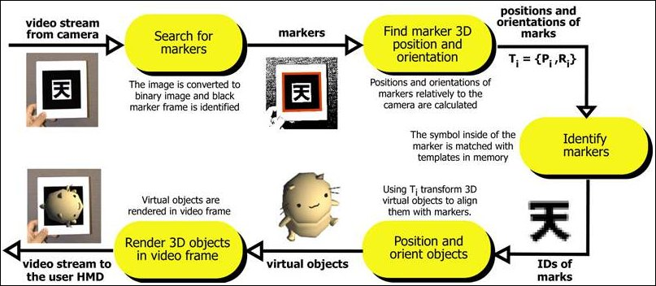
The traditional template marker can be applied to several marker types of varying names that can lead to some terminology confusion. Some of these markers types that share many similar characteristics are known separately as square markers, 2D-barcodes and matrix markers. This page is about square markers.
While vision-based tracking is exciting in enabling so many applications, there are limitations which affect ARToolKit and other vision based systems.
Naturally the virtual objects will only appear when the marker being tracked is in camera view. This may limit the size or movement of the virtual objects. It also means that if users cover up, from the camera's view, part of the marker with an obstruction, the composited virtual model disappears. Also, if the marker borders are moved outside the camera's view, the marker will be clipped, no longer having four corners. As a result, recognition will fail.
There are also range issues in optical tracking, since as markers are move further away from the camera, the markers occupy fewer pixels in the camera's view and results in having insufficient detail for recognition, tracking and identification. The larger the physical embedded marker pattern, the further away the embedded marker pattern can be detected and so the greater the track-ability of the marker.
Table 1 shows some typical maximum ranges for square markers of different sizes. These results were gathered by scanning square markers of increasing size, placing them perpendicular to the camera and increasing the distance between the camera and marker until the marker is no longer recognized.
| Pattern Size (inches) | Usable Range (inches) | |../_media/---------------------------: |../_media/-------------------------------: | 2.75 | 16 | 3.50 | 25 | 4.25 | 34 | 7.37 | 50 [Table 1: Tracking range of different size square markers]
In order to increase the usable range, choosing marker images with lower complexity will help. Marker images with large black and white regions (i.e. low frequency patterns) are the most effective. Replacing the marker's pattern of the 4.25 inch square marker (used above) with a pattern of significantly increased complexity reduced the tracking range from 34 to 15 inches.
Think of low optical frequency images as images made up with pixel values that change little and infrequently over the two dimension space the image occupies. And, inversely, high frequency images are made up of pixel values that change greatly and often. Recognition and tracking are best served by patterns made up of a simple, rotationally asymmetrical, low frequency, image. Or a low number aggregation of contrasting low frequency images. That is, marker patterns of simple shapes of no and little detail.
An alternative to using traditional template square markers is 2D-barcode markers. These markers have a matrix of black and white squares in the interior of the marker producing a unique pattern. 2D-barcodes can have a much lower optical frequency than traditional template square markers depending on the complexity of the pattern content. You are also able to make your own square markers.
Tracking is also affected when the orientation of the two dimensional plane that the marker lies on is not perpendicular to camera's view. That is, some camera-view-to-marker orientation other than a marker laying flat on a table top and a camera hovering straight up above while the camera's lens is pointed straight down at the marker. As the camera's view become more tilted horizontally relative to the marker's plane (to the table top), less and less detail of the marker is visible and and it becomes un-recognitionable.
Finally, the tracking results are also affected by lighting conditions. Overhead lights may create reflections and glare spots on a paper marker and so make it more difficult to find the marker square. Shadows can be cast across the paper, breaking up white areas in the camera image.
To reduce the glare, markers should be constructed of or over non-reflective surfaces. For example, by gluing black velvet fabric to a white base. The 'fuzzy' velvet paper available at craft shops also works very well.
To reduce shadows, we recommend using omnidirectional lighting (lighting conditions where light falls on the markers from all directions).
ARToolKit is well known for the appearance of its markers: square markers with a black border, and with an arbitrary user-definable image in the interior. The "Hiro" marker used by default in the ARToolKit examples is an iconic example.
Multiple markers can be used to represent different objects or coordinate systems in an AR application. Additionally, a pattern can perform an important function in calculating the orientation of a square marker, since a pattern, being rotationally asymmetric, distinguishes between the four possible orientations of a marker in two dimensional space (the marker plane).
However, using arbitrary patterns inside a marker comes at some computational cost. The interior of every black square in the image captured from the camera must be compared against every known marker pattern at all four possible orientations. For a handful of markers, this computation comes at small cost, but as the number of markers in use in a single tracker rises to 20 or 100; the cost becomes significant. Additionally, pattern based markers are more likely to be confused by the tracker when there are a large number of markers (since there is a lower degree of uniqueness within the set of markers), leading to markers being misrepresented as each other.
The solution to the tracking difficulties caused by large number of markers is to use so-called two-dimensional barcode (2D-barcode) markers. These markers no longer have arbitrary user-defined patterns in the interior. Instead, they have a predetermined pattern of black and white squares in a simple grid arrangement (matrix pattern). ARToolKit treats the squares in a matrix pattern as a 2D-barcode; each unique matrix pattern being associated with an predetermined identifier.
2D-barcode markers are recognized in constant time meaning that different 2D-barcodes will take about the same amount of computer time to be recognized. Therefore, a large numbers of 2D-barcodes can be used in a scene at little additional computational cost. Additionally, when using 2D-barcode markers, there is a lower probability of one marker being mistaken for another. The downside is of course that the pattern inside the printed markers is no longer pictorial.
The total number of possible barcodes available depends on the number of rows and columns in the barcode and the type of error detection and correction (EDC) algorithm enabled. Using better EDC will result in a smaller set of barcodes being available, but lower likelihood of markers being misrecognized during tracking.
The barcode type is set via the function arSetMatrixCodeType
The following table sets out the available number of barcodes:
| Matrix code type | Maximum number of markers | Hamming distance | | ------------------------------------ | -------------------------- | ---------------- | | AR_MATRIX_CODE_3x3 | 64 | 0 | | AR_MATRIX_CODE_3x3_PARITY65 | 32 | 1 | | AR_MATRIX_CODE_3x3_HAMMING63 | 8 | 3 | | AR_MATRIX_CODE_4x4 | 8192 | 0 | | AR_MATRIX_CODE_4x4_BCH_13_9_3 | 512 | 3 | | AR_MATRIX_CODE_4x4_BCH_13_5_5 | 32 | 5 | | AR_MATRIX_CODE_5x5 | 4194304 | 0 | | AR_MATRIX_CODE_6x6 | 8589934592 | 0 |
For example, the first row tells us that a 2D-barcode marker with a 3x3 matrix of squares yields 64 rotationally unique patterns that are associated with predetermined identifiers (IDs), but has no EDC capacity.
In general, it is better to use the barcode type with the greatest possible Hamming distance, as this results in the lowest likelihood of one marker being misrecognized as a different marker.
Multi-markers, not to be confused with the concept of multiple markers discussed above, are marker types that are made up of many sub-markers that are recognized and tracked as a single marker entity. This is opposed to recognizing and tracking multiple markers separately in a camera view. Patterns made up of a grid (matrix) of 2D-barcode markers are the default configuration for multi-marker sets, since they offer such radical performance improvements over other marker types with the use of multi-markers. Another advantage of multi-markers over traditional markers is that a multi-marker can still be recognized and tracked when some sub-markers are occluded from camera view.
The default barcode dimension for 2D-barcode markers in ARToolKit is a 3x3 pattern. For 3x3 2D-barcodes, there are 64 rotationally unique pattern arrangements making the marker suitable for augmented reality - enough patterns for most tabletop AR applications. You will find “.png” graphic files representing the 64 2D-barcode patterns in the ARToolKit SDK download; see folder path “[downloaded ARToolKit SDK]/doc/patterns/Matrix code 3x3 (72dpi)/”. These files can be printed.
The easiest way to use multi-markers in ARToolKit is to make a multi-marker dataset that consists of barcode markers. In order to do this, you only need to specify the number of markers, the ID of the barcodes involved, and their relative position to one another. For example, a single multi-marker dataset can be configured to track six unique sub-markers each affixed to six sides of a cube, allowing you to track a cube as a single object. This is done by defining a single multi-marker dataset that is configured with six sub-markers, the ID of the sub-markers (e.g. IDs 0–5), and where the sub-markers are relative to one another (rotationally and distance-wise). Due to the unique advantage multi-markers have for track-ability, the cube is still recognized and tracked despite the impossibility that all sides of a cube can be simultaneously in camera view.
For more information on multi-markers, including their configuration, visit the multi-marker page.
In ARToolKit the term multimarker (as a single word) has a special meaning. Rather than meaning the use of more than one marker at a time, it refers specifically to the use of multiple square markers fixed to a single object. Multimarker tracking has special support in the ARToolKit API and allows for a number of tracking performance and stability enhancements.
In multimarker tracking, the markers can have arbitrary relationships to each other, but these relationships must remain fixed. In practice, the most common multimarker arrangement is multiple markers on a single flat sheet, as in the examples provided with ARToolKit: 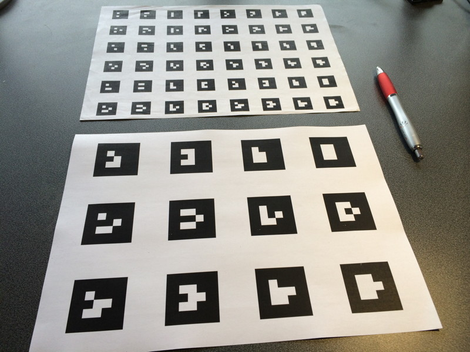
Many other useful arrangements are possible, e.g. the cube example also provided with ARToolKit: 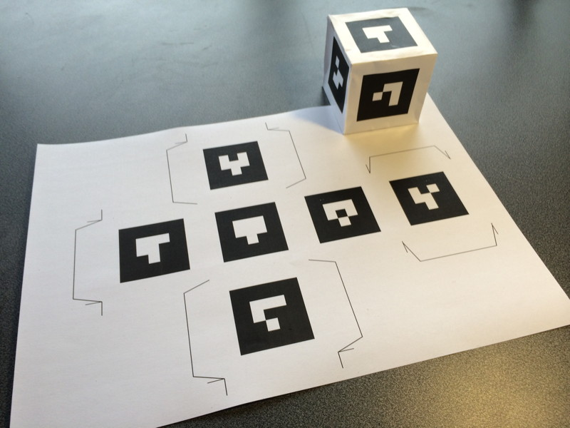
Some of the benefits of multimarkers include:
Note that these are the same advantages of using NFT (texture) tracking. The advantages of multimarker tracking over NFT is that it is less CPU intensive, faster, and can operate reliably at greater distances from the camera. The obvious disadvantage is that it requires the surface to be covered in square markers.
The examples shown above all use barcode (matrix) markers. Pictorial (template) markers can also be used, and ARToolKit has included an example: ![This example uses six pattern (template) markers. The multimarker config and its pattern files can be found in the bin/Data/multi directory of the SDK. This works with the multi example in ARToolKit on desktop.Example_multimarker_template
Barcode markers do have the advantage over pictorial markers of speed, setup simplicity (no need to make pattern files) and improved rejection of false matches when using markers with error detection and correction (e.g. the marker sets with Hamming codes).
ARToolKit includes the following examples of multimarker tracking: - multi - multiCube
PDF files you can print out for the marker sets used in these examples can be found in the files doc/patterns/Multi pattern (template, A4).pdf or doc/patterns/Multi pattern (template, Letter).pdf and doc/patterns/Cubes/cube00-05-a4.pdf or doc/patterns/Cubes/cube00-05-letter.pdf. If you print on ISO A4 size, choose the PDF with "A4" in the name, or if you print on US Letter size paper, choose the PDF with "Letter" in the name.
In ARToolKit for iOS, any app using the ARAppCore code supports multimarker tracking without any further work by the developer. The code is provided in the ARMarkerMulti Obj-C class. Thus, the following examples include support for multimarker tracking, as well as other markers types:
In ARToolKit for Android, any app using the ARBaseLib library or its underlying native implementation, ARWrapper, supports multimarker tracking without any further work by the developer. The code is provided in the ARMarkerMulti C++ class. Thus, the following examples include support for multimarker tracking, as well as other marker types:
In all the examples, multimarkers are specified to the system by use of a multimarker configuration file. This is a plain text file with a structure which sets out the number of markers, their barcode IDs or pattern file names, and their relationship to a common shared coordinate system origin.
A multimarker configuration file is structured as follows:
If we examine the first marker definition in the example multimarker set bin/Data/cubeMarkerConfig.dat, we see these lines:
<pre> #marker 1 00 40.0 1.0000 0.0000 0.0000 0.0000 0.0000 1.0000 0.0000 0.0000 0.0000 0.0000 1.0000 0.0000 </pre>
Following the above guide, we see that this uses barcode pattern 0 and the marker is 40 mm wide. The transformation matrix is the identity matrix, i.e. marker 0's origin is co-located with the origin of the multimarker set, and the axes are co-aligned.
If we consider the transformation matrix of individual markers, the first three columns are a rotation matrix which represent the rotation of the marker with respect to the origin of the multimarker set. This is the standard 3x3 rotation matrix familiar in computer graphics or linear algebra. The fourth column is the offset from the origin of the multimarker set to the origin (the centre) of this the individual marker.
So for example, if marker 0 in the example was rotated by angle theta about the X axis then the matrix would change to:
<pre> 1.0000 0.0000 0.0000 0.0000 0.0000 cos(theta) -sin(theta) 0.0000 0.0000 sin(theta) cos(theta) 0.0000 </pre>
As a further example, consider marker 01 in the cube example. Its definition is:
<pre> #marker 2 01 40.0 1.0000 0.0000 0.0000 0.0000 0.0000 0.0000 1.0000 30.0000 0.0000 -1.0000 0.0000 -30.0000 </pre>
This tells us that the origin of marker 01 is offset +30 mm in the direction of the multimarker set's y axis, and -30 mm in the direction of the multimarker set's z axis. Finally, it is rotated by -90 degrees (in a right-hand sense) around the multimarker set's positive x axis.
Let R[1-0] be a 4x4 matrix where the first three rows are the values specified in configuration file, and the fourth row is the row vector {0, 0, 0, 1}. Then when R[1-0] is applied to a point vector in the marker coordinate system p[1], it transforms it into a point vector expressed in the multimarker coordinate system p[0], i.e. p[0] = R[1-0] • p[1] (where • is the normal matrix multiplication operator).
In the image below, the red arrows denote the x, y and z axes of the multimarker coordinate system, aligned with marker 0. The blue arrows denote unit vectors n̂, ô and â, aligned with the x, y, and z axes of the marker 1 coordinate system. The green arrow denotes p, a vector extending from the origin of the multimarker coordinate system to the origin of of the marker 1 coordinate system. The transform matrix for marker 1 can then be considered 4 column vectors expressing the projection of n̂, ô, â and p onto x, y, and z.
The matrix is thus:
<pre> n[x] o[x] a[x] p[x] n[y] o[y] a[y] p[y] n[z] o[z] a[z] p[z] </pre>
Compare this to the example above, and it can be seen that for marker 01 on the cube, n̂ is aligned with the x axis (no change), ô points completely in the direction of -z, and â points completely in the direction of +y.
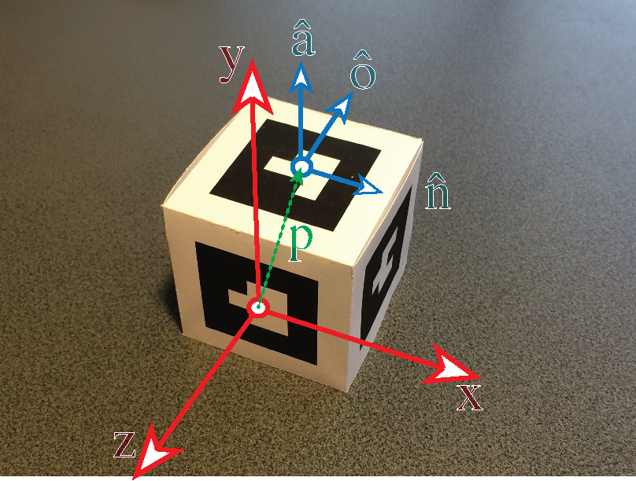
A fiducial marker is an easily detected feature in proximity to and as a point of reference to an object targeted for tracking. Fiducial markers can be knowingly and intentionally placed or naturally exist in a scene. Natural Feature Tracking (NFT) is the idea of recognizing and tracking a natural scene that is not (seemingly) augmented with markers. NFT can use embedded fiducial markers in a natural pictorial view to enhance tracking points and regions within the view. The result can be seemingly marker-less tracking (since the fiducial markers need not be obvious to the human viewer). Although ARToolKit offers full marker-less tracking, there are situations where using one or more fiducial markers has advantages:
To use only the standard 1.0 version of ARToolKit's NFT tracking with a fiducial marker, the tracked surface must have the marker either in the image or around the outside of it, there must be at least one in each image, the marker(s) must be square, and the markers must all have a black border and lie on a white background, or vice-versa. The marker(s) are not required to be of a particular size and the marker can embed colored patterns that blend with the image background.
Once the image is in digital form, you should add the fiducial marker to it. The marker(s) can have black or white borders. If using black borders, the marker must sit on an area of white or very light-colored background (add an extra white border around the black border if necessary). If using white borders, the marker must sit on an area of black or very dark colored background. The inner half of the marker forms the unique portion, i.e. for a marker 80 mm wide, the inner 40 mm in both vertical and horizontal dimensions is the unique portion.
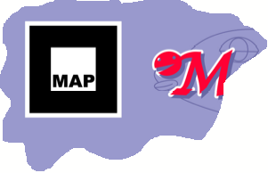
The marker does not have to be inside the portion of the image which is used as the NFT surface. It can be outside it, as these two examples demonstrate:
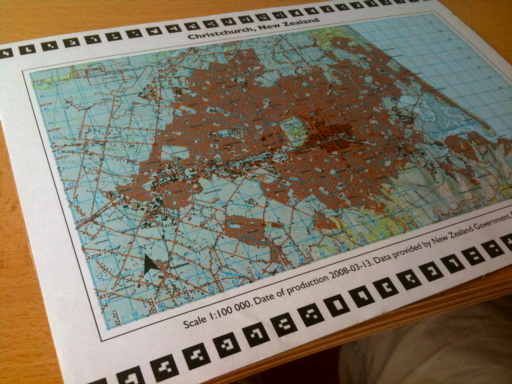 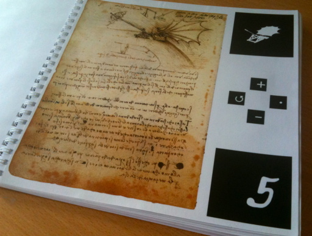
We can revisit the bottle-label image from the Training NFT to a new surface tutorial with the aim of embedding a marker into the label image. If we choose the pattern (the inner-part of the marker) so that it contains some of the background, then the marker will be even less intrusive.
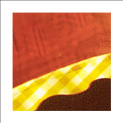 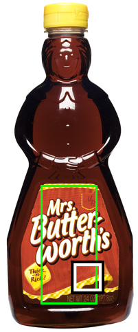 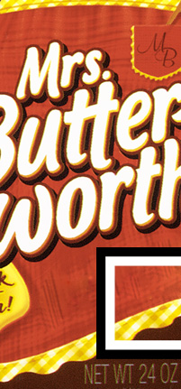
If implementing an app using standard ARToolKit NFT in which one or more fiducial markers is required, an image and markers input set configuration file (.iset) is required to generate recognition and tracking data set files. The generated files are a marker file (.mrk) and one (or more) pattern files (.pat-xx).
From the command-line, execute the ARToolKit utility genMarkerSet.exe with the input set configuration file (.iset) as an argument:
| Windows Desktop (Android/WinRT devices) | Mac OS X (Android/iOS devices) | Linux (Android devices) | |../_media/------------ |../_media/------- |../_media/------------ | | genMarkerSet.exe mycoolimage.iset | ./genMarkerSet mycoolimage.iset | ./genMarkerSet mycoolimage.iset |
You will see two numbers; the first, the number of candidate markers in the image, and the second, the number of markers that pass a goodness test (making sure that the marker is square and with clean edges) and which are candidates for training. If the second number is 0, then no candidate markers were found; a result that will send you right back to the very start of the process - creating an image with an embedded marker(s)!
If the markers are detected then their positions will be displayed in a window, and you will be prompted to accept or reject each one. Type 'y' and press return to accept the marker. After this step, the utility prompts for a filename to save the dataset.
Once the training has completed, you should move the .mrk file and the .pat-xx files into the same folder as the .iset file from which they were generated. That way, the software will automatically locate them.
The easiest means of testing NFT datasets you have trained is to run them using the nftSimple example program (ARToolKit NFT versions to 5.X) or "exampleNFTWithFiducial" example program (ARToolKit v5.X). Open a console window and change to the ARToolKitNFT bin directory.
Run nftSimple.exe from the command-line providing a relative path to the config.dat file as a command-line argument. The previous MagicLand3 sample dataset example has been deprecated. A newer nftSimple demonstration is to be provided (TBP). E.g, to launch nftSimple with the [newer example TBP] sample dataset:
| Windows Desktop (Android/WinRT devices) | Mac OS X (Android/iOS devices) | Linux (Android devices) | |../_media/- |../_media/- |../_media/- | | nftSimple.exe Data[newer example TBP]\config.dat | ./nftSimple.app/Contents/MacOS/nftSimple Data/[newer example TBP]/config.dat | ./nftSimple Data/[newer example TBP]/config.dat |
The tracking in this application is initialized by the appearance of a marker. Once a marker is detected, tracking is switched to feature based and the marker is no longer necessary. Red 3D boxes are drawn on the images. If feature tracking failed, it is changed back to marker based tracking and yellow 3D boxes are drawn.
For more information continue to the page Running the nftSimple example
A more complex example, showing the use of 2D-barcode markers outside the NFT surface can be downloaded here.
ARToolKit NFT is able to recognize and track natural features of photos and documents, specifically, planar textured surfaces. However, to accomplish this, ARToolKit NFT requires that the visual appearance of the surface is known in advance. Thus, the system has to be trained with a surface in advance to recognize and track the surface. The output of this training is a set of data that can be used for realtime tracking in application using the ARToolKit SDK.
The following constraints apply to surfaces which can be used with ARToolKit NFT.
The ARToolKit NFT tracker, does not require augmenting the image with fiducial markers to implement NFT tracking. But, for increased efficiency and robustness, fiducial markers can be used along with NFT markers as part of the dataset when using the NFT tracker.
A good example of an NFT image is "pinball.jpg" (found under the path: [downloaded ARToolKit SDK root directory]/doc/Marker images).
The NFT tracker works by looking for a known feature points defined by a dataset, which is a representative descriptor of the image you want to track. This section will guide you to producing a high-quality soft-copy image for NFT tracking.
Care must be taken to ensure that the image supplied to the training tools is not too big (wasteful of memory, disk and CPU during tracking) and not too small (of insufficient detail to allow tracking when the camera is close to the image). Whether starting from a pre-existing print, or a soft-copy image, the considerations for resolution and target size are the same:
For example, borderless A4 at 150 dpi is 1240 pixels wide and 1754 pixels tall. Borderless US Letter at 150 dpi is 1275 pixels wide and 1650 pixels tall. If producing from digital artwork at 1:1 scale, you can use image size from that artwork. 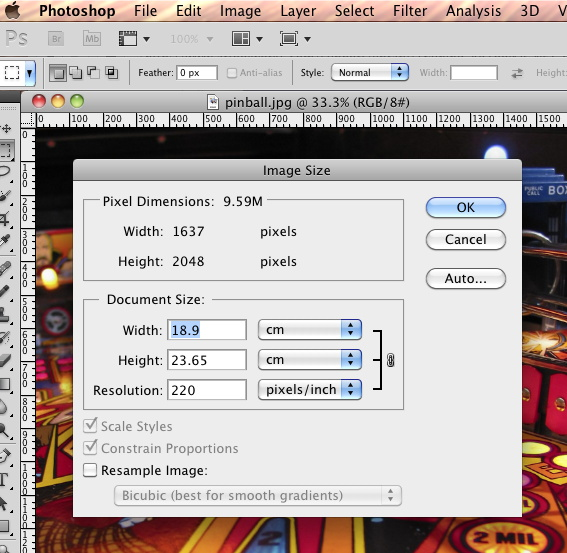
If the measurements are in millimeters, you can convert to inches by dividing by 25.4 millimeters per inch:
<pre> inches = millimeters / 25.4 millimeters per inch </pre>
In many cases, it may be simplest to start with a hardcopy image of the surface to be tracked. Further considerations for starting with a hardcopy image:
If using a scanner or camera that needs a "resolution" setting, you can just directly use the maximum resolution calculated by the checkResolution tool (found under the path: [downloaded ARToolKit SDK root directory]/bin).
If using a scanner or camera that expresses resolution in terms of dots per inch, calculate the required pixel resolution. The calculation:
width in pixels = width in inches * dots per inch
height in pixels = height in inches * dots per inch
If using a scanner or camera that requires a "megapixels" setting, calculate the required width and height in pixels (above) , then multiply these together and divide the result by 1,000,000. Example:
640 width in pixels * 480 height in pixels = 307,200 pixels of resolution
307,200 pixels / 1,000,000 pixels/megapixel = ~0.31 megapixels of resolution
After scanning or photography is completed, check that the resulting digital image is not blurred and has sufficient contrast. Washed-out blurry images work very poorly in the NFT training process.
Using soft-copy digital artwork as input to the training process versus using the printed hardcopy of the digital art can result in significant differences in trained features that will reduce the robustness of the tracking of the final hardcopy surface. Also, if the scale of the artwork soft-copy used in the training process differs from the scale of the final hardcopy surface used for tracking, misleading tracking can result. Therefore, it's recommended to start the training process by printing the digital artwork soft-copy and use the resulting printed hardcopy as the eventual input soft-copy image for the training process.
Producing the digital image for tracking from pre-existing digital artwork is simple. First print the digital artwork referring to the two previous sections. After printing your digital artwork, check that the print is the correct size. Also, check that the print matches the artwork in terms of contrast, absence of print defects, etc.
Now that you have an image you wish to use with NFT, you must create the dataset (train the image). Surface training uses utilities included in the ARToolKit package. These utilities must be run from the command line. On Linux / OS X open a terminal window and cd to the bin directory. On Windows, this means you must open a “cmd” console and cd to the bin directory.
Most of the operation of the training utility programs proceeds without much input from the user, but there is one important decision required prior to starting the training utility; that is selecting the resolutions at which features of the image will be extracted. (Generally, features are extracted at three or more resolutions to cope with the fact that dots in the image will appear at different resolution to the software depending on how close or far away the camera is from the image.)
For a typical webcam operating at VGA (640x480) resolution and tracking at handheld-distance from the surface, a range of resolutions between 20 dpi and 120 dpi is a good starting point. If using a higher-resolution webcam or tracking much closer to the surface, higher resolutions will be required. Note: that there is no point in using resolutions higher than the actual resolution of the final printed surface!
The utility application "checkResolution" (found under the path: [downloaded ARToolKit SDK root directory]/bin) can help with the decision of what values to use as minimum and maximum resolutions.
After completing a training pass, it will pay to come back to the choice of image set resolutions and experiment with different minimum and maximum resolutions. The choice depends greatly on the way in which you intend to use ARToolKit for tracking, and your source images.
If you have further questions, you should ask questions to the ARToolKit community on the forum.
The same NFT dataset generation tools are shared between all supported ARToolKit desktop and mobile platforms. Dataset generation is performed using a single integrated tool ""genTexData"".
After setting any required video configuration, launch the genTexData tool:
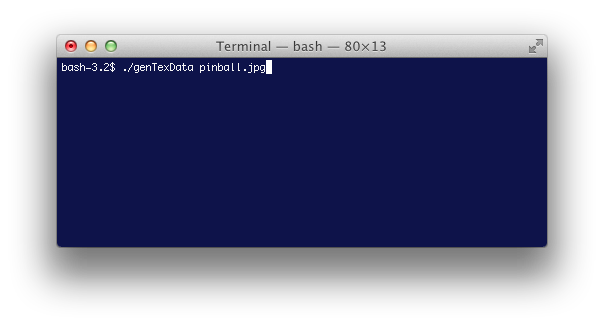
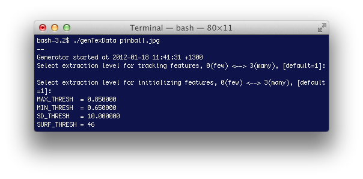
In the first step, the source image is resampled at multiple resolutions, generating an image set (.iset) file. This contains raw image data that will be loaded into the app at runtime for tracking.
You may be prompted for the source image resolution, as well as the range of resolutions you wish to use for tracking. (See the preceding section for advice on how to choose a good set of resolutions to use.) Enter the minimum and maximum resolutions at the terminal prompt. You can enter decimal values (numbers with a '.'). These values can also be manually specified on the command line. (See the list of command line options below.)
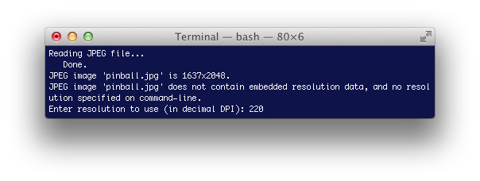
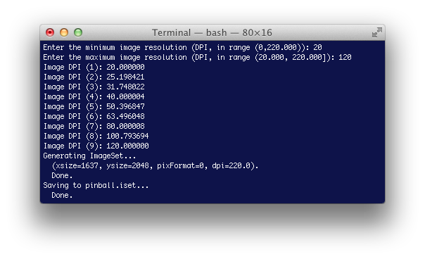
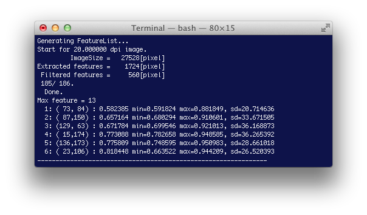
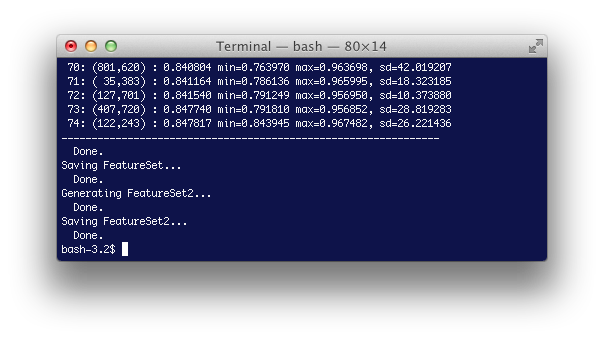
Once the image set and feature sets have been generated, you can use the dispImageSet and dispFeatureSet utilities to examine the output of the training process.
By examining the output of dispFeatureSet, you can immediately see a number of things about the image used:
The easiest means of testing NFT datasets you have trained in live tracking is to run them using the nftSimple example program.
Whether working from supplied printed material or a print from digital artwork, eventually the user needs an actual surface to hold in front of the camera to recognize and track the trained image.
The soft-copy image is printed using a high-quality color printer, on low-gloss paper. It is important that the image surface is kept as flat as possible. Small amounts of curvature can be coped with by the tracker to some degree, but flat is best. Where possible, the print should be on or affixed to a physical prop that keeps it flat.
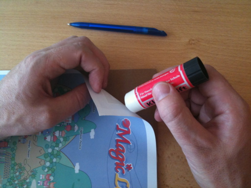
For Example: If you were printing a label to be attached to a product, the label should be applied to a flat area of the product. The curved surface of a bottle or can would not be suitable, and alternatives could include the packaging holding the bottle or can, or on a flat label or tag attached to the product. If mounting in a book, surfaces should be printed on heavy card and bound with board-book, ring or spiral binding. If used as an unbound card, affix to the card with a dry glue (e.g. a glue stick or an industrial dry adhesive).
This page is a description of the tools used along with NFT tracking.
The checkResolution tool supplied with ARToolKit can help in determining the required resolution of source image data used in creating an NFT dataset.
./checkResolutionYou will be prompted to enter the size of the Hiro marker. E.g. if printed at 40 mm size, enter 40.
The camera is pointed towards the printed image to be tracked, and the Hiro marker is positioned so that it is on top of the other marker, positioned in the middle of the camera frame. The display indicates the tracked marker in green, with a red cross at the centre of the marker, and below, the vertical and horizontal resolution of the printed image directly under that point. 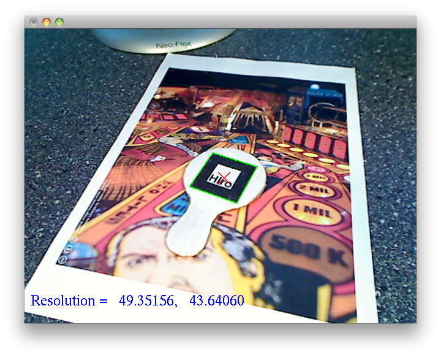
The camera is moved around (with the Hiro marker moved each time so that it remains roughly in the centre of the camera frame) to the maximum and minimum distances the tracked marker is likely to be seen from: 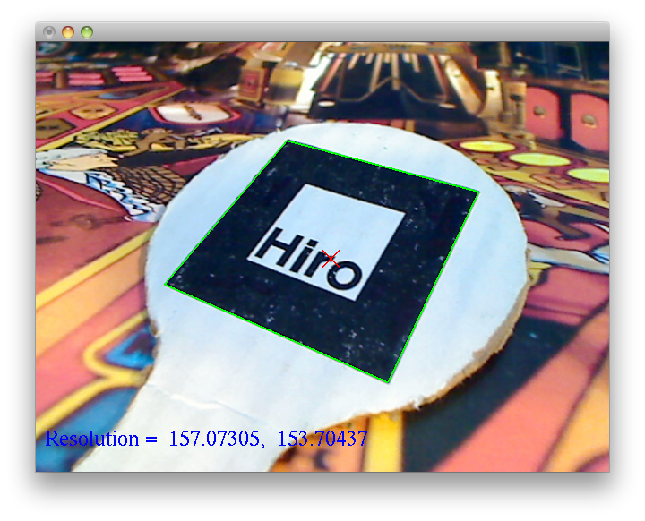 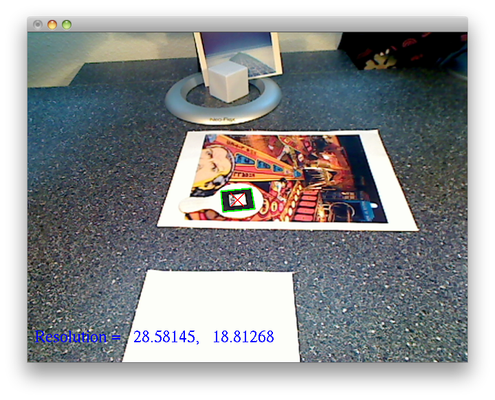
Moving the camera around and observing the DPI values should give you an idea of the maximum resolution required when producing the digital version of the printed material to be tracked (it is not recommended to produce imagery at a higher resolution than the printed version, which is typically 150dpi). Additionally, the output helps determine the range of resolutions required when running the genImageSet tool as the first step in training a new NFT data set.
Be sure to use a camera running at the same frame size as will be used in the online tracking process; the DPI values produced depend on the camera image size. In spite of megapixel webcams being the norm, it is actually better to use a lower resolution camera with a higher frame rate; 640x480 is perfectly adequate for most NFT tracking situations.
Below is a table of keyboard / mouse controls for using checkResolution:
| Key | Function | |-----|----------------------------------| | esc | Quit program | | 1 | Decrease binarization threshold | | 2 | Increase binarization threshold. |
dispFeatureSet displays trained NFT datasets by overlaying representations of the data points on the source images.
Usage:
<pre> ./dispFeatureSet <filename> -fset Show fset features. -fset3 Show fset3 features. </pre>
After launching dispFeatureSet, the various image resolutions will be displayed on screen with the tracking features overlaid. The features used in continuous tracking are outlined by red boxes, and the features used in identifying the pages and initializing tracking are marked by green crosses.
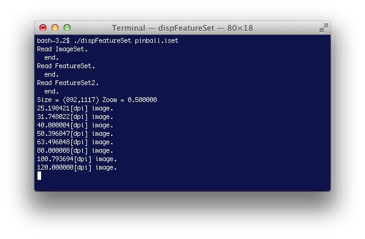 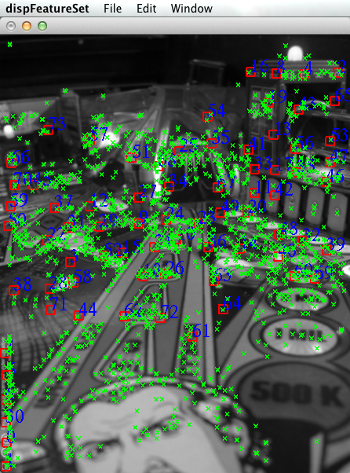
dispImageSet displays compressed image pyramids.
Usage:
<pre> ./dispImageSet <filename> </pre>
After launching dispImageSet, the various image resolutions will be displayed on screen (shrunk/zoomed as necessary to fit on screen). Press spacebar to view the images, or esc when you're done.
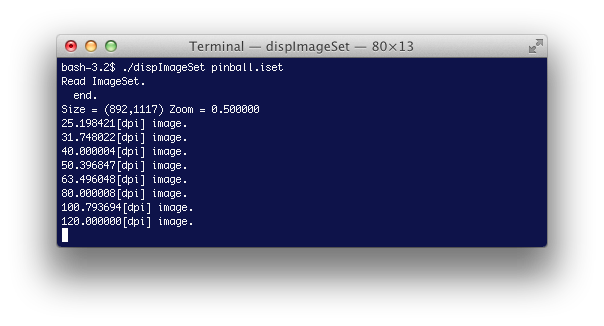 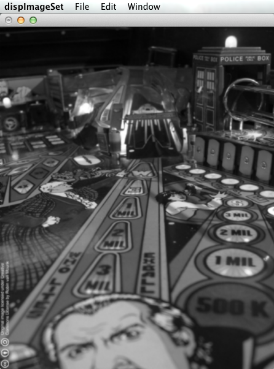
genTexData performs training of NFT datasets from a supplied JPEG-format source image.
Usage:
<pre> ./genTexData <filename> -level=n (n is an integer in range 0 (few) to 4 (many). Default 2.' -sd_thresh=<sd_thresh> -max_thresh=<max_thresh> -min_thresh=<min_thresh> -leveli=n (n is an integer in range 0 (few) to 3 (many). Default 1.' -feature_density=<feature_density> -dpi=<dpi> -max_dpi=<max_dpi> -min_dpi=<min_dpi> -background Run in background, i.e. as daemon detached from controlling terminal. (Mac OS X and Linux only.) -log=<path> -loglevel=x x is one of: DEBUG, INFO, WARN, ERROR. Default is INFO. -exitcode=<path> --help -h -? Display this help </pre>
Exit codes:
<pre> E_NO_ERROR = 0 E_BAD_PARAMETER = 64 E_INPUT_DATA_ERROR = 65 E_USER_INPUT_CANCELLED = 66 E_BACKGROUND_OPERATION_UNSUPPORTED = 69 E_DATA_PROCESSING_ERROR = 70 E_UNABLE_TO_DETACH_FROM_CONTROLLING_TERMINAL = 71 E_GENERIC_ERROR = 255 </pre>
See Training NFT to a new surface for more information on NFT datasets.
Markers are the optical inputs to ARToolKit. Square markers are one of several types of markers that ARToolKit recognizes and tracks in a video stream. A marker is simply a graphic image. ARToolKit comes with sample png, jpeg and PDF marker pattern and sample marker image files. For example, below, the Hiro square marker can be printed and affix to card stock (so that the marker remains flat).
Square markers have only a few constraints.
ARToolKit supports the recognition of a marker type referred to as a matrix marker which is made up of a grid of black and white squares that is a form of two-dimensional barcode. Matrix markers can speed up tracking when many markers are required in a scene, and when used with error correction and detection (EDC) offer increased resistance to one marker being misrecognized as a different marker.
A new marker can be designed and created by editing the marker template image file provided in the ARToolKit SDK: doc/patterns/Blank pattern.png. Markers can be scaled to any size and placed anywhere in a target scene. An ARToolKit utility is used to generate a data file that specifies the size of the marker as well as other marker attributes.
The inner 50% of the marker is interpreted as the marker image by ARToolKit, as per the image at right. Note that the image can be color, white on black or black on white, and it can extend into the border region. Remember that the part of the image outside the inner 50% will be ignored by ARToolKit though, and also be sure not to extend too far into the border, or else ARToolKit might not recognize the marker at all when its at a very oblique angle to the camera.
Even easier to use is Julian Looser's web-based marker generator.
If you are using 2D-barcode markers, you can find the marker images in your ARToolKit distribution, in the folder doc/patterns/Matrix code 3x3/
Given a new square marker (i.e. a padded contrasting square with an embedded rotationally asymmetric pattern), ARToolKit must be trained to recognize it. The output of the training process is a pattern recognition data file referred to as the marker's "pattern file." Pattern files enable ARToolKit to detect, recognize, identify and track new markers in a captured video stream.
The naming convention for pattern files is to prepend "patt." to name the represents the pattern. For example, the pattern file filename for the Hiro marker that is included with the ARToolKit SDK is "patt.hiro" (found in the [ARToolKit SDK]/bin/Data/ directory). Note: ARToolKit SDK may later, in addition, support ".patt" file name extensions (".patt" as a filename suffix).
2D-barcode markers do not require pattern files but instead require the identifying number of the barcode.
Training is done using the mk_patt utility found in ARToolKit SDK. Or, alternately, training can be done using the online (Adobe Flash-based) training application: "Tarotaro".
mk_patt is an easy to use utility for training new markers. Open a command-line session window (on Mac OS X / Linux, open a Terminal window, on Windows, choose "Run" from the Start menu, type "cmd"). On Linux / OS X, type:
<pre> ./mk_patt </pre> On Windows, type: <pre> mk_patt.exe </pre>
You will see output similar to this in your terminal:
<pre> ./mk_patt Enter camera parameter filename(Data/camera_para.dat): </pre>
mk_patt prompts for a camera calibration file (filename extension .dat). It's possible to use another tool that comes with ARToolKit SDK to calibrate your camera. The tool generates a calibration data file specific to the camera. If there is calibration data file available, enter the path.
You can forego the step to create a calibration data file for a specific camera and use the default calibration data file that comes with the ARToolKit SDK. To select this, simply press enter to the above prompt.
At this point, the camera is activated: 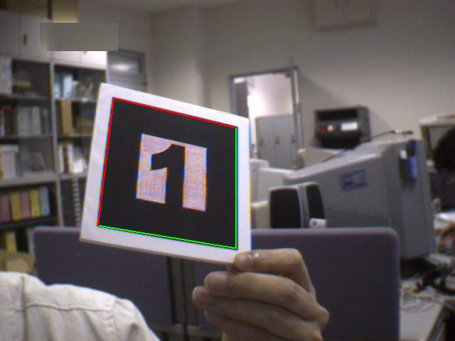
Point the camera directly at your marker. Try to align the camera so that the marker appears square on the screen and fills the camera's view. If ARToolKit has identified the marker, it will outline it with red and green lines.
Rotate the marker so that the red corner of the square is at the top-left corner of your marker, then press the left mouse button (for left-handed mouse users, this may be the configured primary mouse button). The image will be captured, and in your terminal window you will see the prompt:
<pre> Enter filename: </pre>
Type a filename starting with "patt." prepended (by convention) followed by a unique pattern name and press return. If you don't want to save it, just press return to restart the video. That's it! You can train more patterns, or click the right mouse button (for left-handed mouse users, this may be the configured secondary mouse button) to exit the program.
There are more options that you can customize when training markers (such as size of the marker border). Running the utility with the --help option will show the various command-line options for adjusting the default settings. The help text is reproduced here:
<!-- Can't use HTML pre tags here. For some reason, the tags were not interpreted as HTML tags and the tags displayed literally in the browser view. JWolf 11/06/15 -->
Usage: ./mk_patt [options]
--borderSize f: specify the width of the pattern border, as a
percentage of the marker width. Range (0.0 - 0.5)
(not inclusive).
-border=f: specify the width of the pattern border, as a percentage
of the marker width. Range (0.0 - 0.5) (not inclusive).
--cpara <camera parameter file for the camera>
-cpara=<camera parameter file for the camera>
--vconf <video parameter for the camera>
-h -help --help: show this message
You can change simpleLite or simple applications to use your new pattern by editing the source code and recompiling. First drop your pattern file into the bin/Data directory. Then, in your source code editor, locate the code char *patt_name = "Data/patt.hiro"; and replace patt.hiro with the name of your pattern. Recompile, and voila!
The border width can be set at runtime. See the documentation for arSetPattRatio.
As of ARToolKit v5.3, the marker's pattern size (the number of pixels sampled for the pattern) can be changed at runtime. By default it is 16x16 pixels, and if you wish to maintain compatibility with previous versions, it is recommended to retain this setting. If you wish to change the size this is done during AR setup by using parameters to the arPattCreateHandle2 function.
If using large images, you may want to edit #defines AR_SQUARE_MAX, AR_CHAIN_MAX, and AR_PATT_NUM_MAX in config.h. These influence memory use so are usually set to a conservative minimum.
ARToolKit has a flexible recognition pipeline, which allows it to work relatively well even with uncalibrated webcams, in a variety of lighting conditions, and with markers of poor quality. However, there are limits to this tolerance, and sometimes when tracking does not work optimally, you might be left wondering how to "debug" the tracking and address the most serious sources of problems.
This article focusses on the issue of marker recognition, particularly marker recognition when using barcode markers, or larger numbers of markers in a multi-marker set.
To help you achieve the best tracking results with multimarker sets and barcode markers and to see where and why ARToolKit cannot track in certain conditions, a tool is provided with ARToolKit, named simply "check_id". check_id allows you to see the output of different stages of ARToolKit's tracking, and to determine visually why markers are not being tracked in certain circumstances. It also allows you to see the ID codes of barcode markers.
check_id does not solve problems with camera calibration. You still need to have a set of calibrated camera parameters for your camera.
If you wish to examine only the recognition of the code on barcode markers, no configuration of check_id is necessary. check_id is launched from the command line. On Linux / OS X, type:
<pre> ./check_id </pre> On Windows, type: <pre> check_id.exe </pre>
check_id should launch and open a video window.
If you also wish to display pose-estimates errors or wish to check recognition of template markers, you will need to define a multi-marker configuration file first. By default, check_id reads its multimarker configuration from up to two multimarker configuration files specified on the command line. You can test (for example) using the pre-supplied file Data/cubeMarkerConfig.dat (which is set to track the cube marker whose image is supplied in PDF form in doc/patterns/Cubes/cube00-05-a4.pdf or /doc/patterns/Cubes/cube00-05-latter.pdf) using the following launch syntax.
On Linux / OS X, type:
<pre> ./check_id Data/cubeMarkerConfig.dat </pre> On Windows, type: <pre> check_id.exe Data/cubeMarkerConfig.dat </pre>
check_id reads standard multi-marker configuration files, which can be edited with a text editor. In such a file, you declare the names of attern files and/or barcode ID numbers, the size of each marker, and the offset and orientation of the marker relative to the origin of the multi-marker set. If you specify only template (pattern) markers in the config file, check_id will automatically select command-line option --patternDetectionMode AR_TEMPLATE_MATCHING_COLOR. Similarly, only barcode markers will result in use of --patternDetectionMode AR_MATRIX_CODE_DETECTION, or a mix of template and barcode markers (usually an undesirable mode) will result in use of --patternDetectionMode AR_TEMPLATE_MATCHING_COLOR_AND_MATRIX.
The initial mode is to display the distortion-corrected normal color camera image. In the top-left of the window, the current thresholding mode (and threshold, if applicable) is displayed. Also, if a valid multi-marker set was loaded from Data/checkidMarkerConfig.dat, then additional indication will show whether robust multi-marker tracking is on or off.
check_id has a few modes which can be selected from the keyboard.
| Key | Function | |------------|----------------------------------------------------------------------| | ? or / | | | q or [esc] | Quit program. | | d | Activate / deactivate debug mode. | | a | Toggle between available threshold modes. | | - and + | Switch to manual threshold mode, and adjust threshhold up/down by 5. | | r | Toggle robust multi-marker mode on/off. | | c | Change arglDrawMode and arglTexmapMode. |
check_id begins processing each frame by performing the thresholding and square-recognition steps of ARToolKit's processing. These are the first and most basic steps in the detection of a marker and calculation of marker pose. We refer to "square-like" regions because at the earliest stages of ARToolKit processing, many regions in the incoming camera image can have shapes that approximate that of a marker. ARToolKit examines each of these shapes, performing various tests to check contrast, match the region to a pattern or to a barcode, to check that the region is planar, and so on. Only when all these tests have passed is the a marker ID returned and a pose-estimate calculated. check_id outlines all fully-identified markers with a red outline, and draws the pattern ID near the centre of the marker.
When a square-like region fails to pass some critical cut-off in the ARToolKit processing, check_id outlines that region in a different color. The meaning of the colors can be seen while the program is running by pressing the '?' key twice. The color of the outline gives an indication of what point of ARToolKit's processing the square-like region was discarded as a marker candidate (the "cutoff phase").
![Check ID Cutoff Phases][Check_id_cutoff_phases_v4.5.0]
Not all cutoff phases are applicable to all markers. For example, the phases whose descriptions refer to "barcode..." are not applicable to pattern-based markers. The phases with "pose error" in the description apply only if a multi-marker configuration file has been correctly defined and loaded.
The size of the marker border, and the pattern type settings can be adjusted from the command line. Running the utility with the --help option will show the various command-line options for adjusting the default settings.
On Linux / OS X, type:
<pre> ./check_id --help </pre> On Windows, type: <pre> check_id.exe --help </pre>
The help text is reproduced here:
<pre> Usage: ./check_id [options] [Multimarker config. file [Multimarker config. file 2]] Options: --vconf <video parameter for the camera> --cpara <camera parameter file for the camera> --borderSize f: specify the width of the pattern border, as a percentage of the marker width. Range (0.0 - 0.5) (not inclusive). --matrixCodeType k: specify the type of matrix code used, where k is one of: AR_MATRIX_CODE_3x3 AR_MATRIX_CODE_3x3_HAMMING63 AR_MATRIX_CODE_3x3_PARITY65 AR_MATRIX_CODE_4x4 AR_MATRIX_CODE_4x4_BCH_13_9_3 AR_MATRIX_CODE_4x4_BCH_13_5_5 --labelingMode AR_LABELING_BLACK_REGION|AR_LABELING_WHITE_REGION --patternDetectionMode k: specify the pattern detection mode, where k is one of: AR_TEMPLATE_MATCHING_COLOR AR_TEMPLATE_MATCHING_MONO AR_MATRIX_CODE_DETECTION AR_TEMPLATE_MATCHING_COLOR_AND_MATRIX AR_TEMPLATE_MATCHING_MONO_AND_MATRIX -h -help --help: show this message </pre>